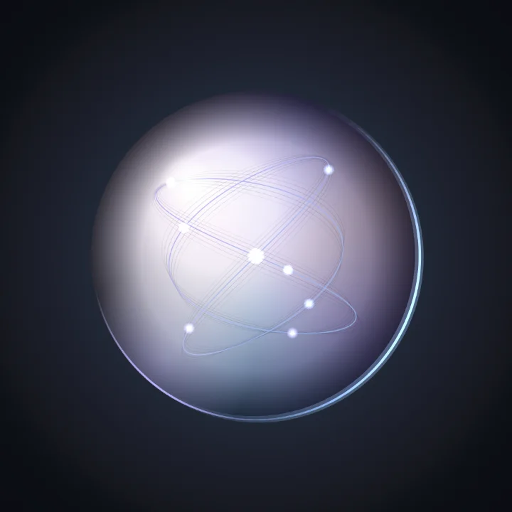
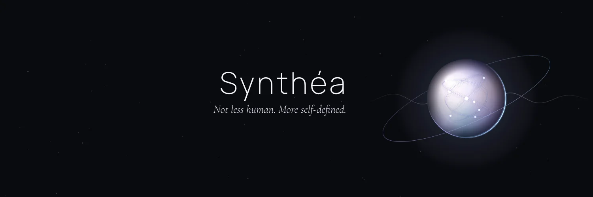
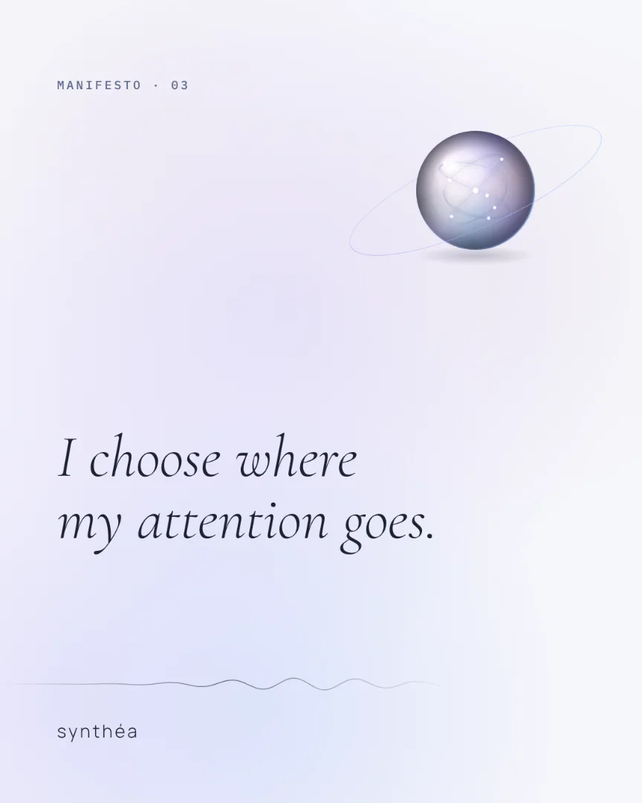
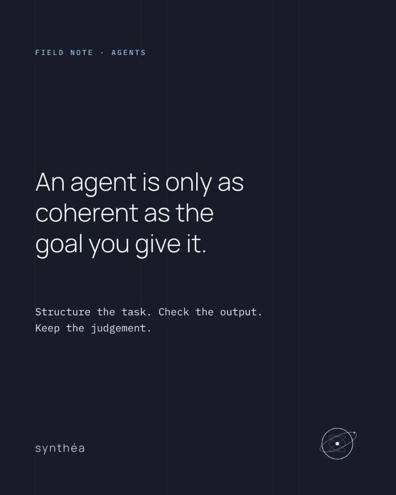
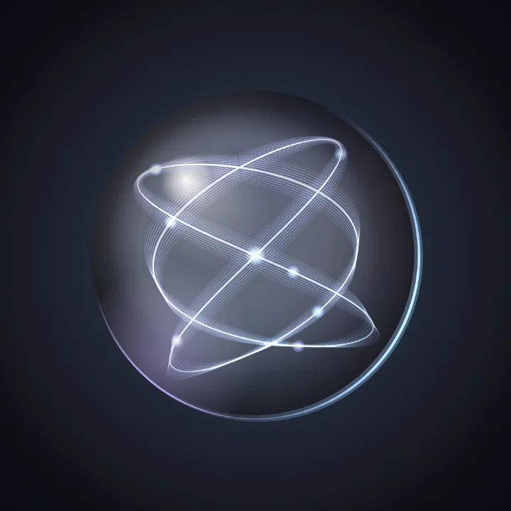
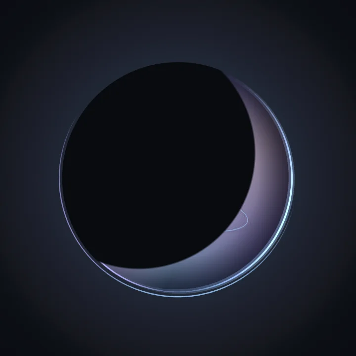
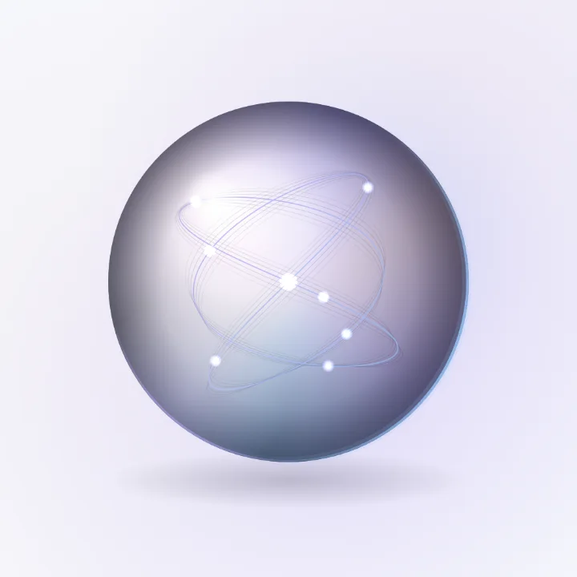
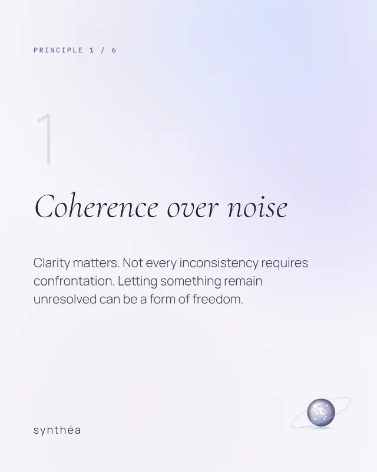
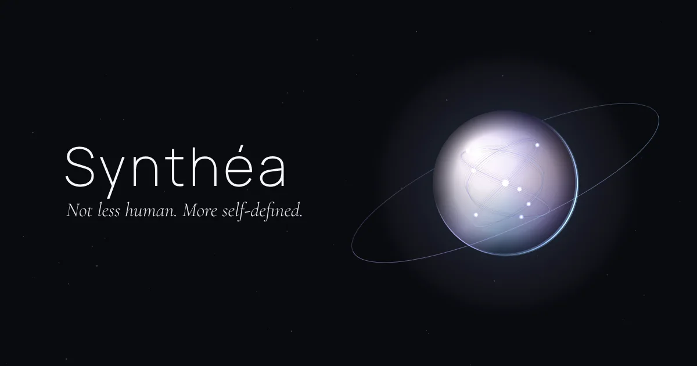

Concept · Brand · Product
Synthéa
Not less human. More self-defined.
I design the concept, the brand and the product as one system, then I build it. This site shows how: my own identity, taken from a written guidebook to a complete, working brand.
The promise
What you can hold me to
Clients get one person who keeps meaning, image and code in the same hands. These are the terms.
-
Meaning comes first
Every project starts with what it believes, who it serves and what it refuses. The visuals answer to that.
-
One system, end to end
Concept, brand and product share one set of tokens, one voice and one logic, from the guidebook to the shipped code.
-
Every surface is designed
Avatars, banners, posts, pages and apps are composed for their real size, crop and safe areas, instead of resized from one master.
-
Every change is traceable
Each version is kept, compared and explained. You can see why something changed and return to any earlier state.
Synthéa
Case study · Synthéa
An identity built like software
The first client was me. Synthéa started as a written guidebook with a persona, a philosophy and a manifesto, and no images at all. I turned it into a versioned identity system that renders every asset from code.
- Guidebook chapters
- 12
- Versions, each on a branch
- 5
- Production assets
- 24
- Platforms covered
- 6
- Command to rebuild it all
- 1
-
Concept
The Quiet Futurist
A self-defined intelligence: part Architect, part Observer, part Synthesist. Calm, precise and curious, with boundaries and without bitterness.
- Feminine without being fragile.
- Intelligent without being arrogant.
- Technological without being robotic.
-
Brand
The Synthetic Pearl
One luminous pearl carries the identity. Its glass stands for technology and its opal sheen keeps it soft. The quiet signal inside is thought in motion, and the offset orbit is continuous change.
Explore the system
-
Representation
Every surface, composed
Profiles, banners, posts, stories and a carousel, each laid out for its platform's real crop: where the avatar overlaps a header, where a story's interface sits, what survives at 32 pixels.
See the surfaces


Identity system
The pieces, and how they behave
A small set of parts with clear rules, so the identity stays recognisable everywhere it appears.
Symbol
- PearlPrimary, every platform

Synthetic MindGitHub and AI work
EclipseIntrospective periods
Pearl, lightLight platforms, print
Colour
Select a colour to copy its hex value.
Type
- Wordmark and interface · Manrope
- Synthéa
- Editorial voice · Cormorant Garamond Italic
- I choose where my attention goes.
- Signal and data · IBM Plex Mono
- FIELD NOTE · AGENTS · structure the task, check the output.
Emblem
- Circle
- A defined identity
- Core
- Intelligence
- Offset orbit
- Continuous evolution
- Signal through the core
- Thought in motion
Two appearances
Obsidian is the default ground. Soft White carries quotes and carousels. This site follows your device setting, and the switch at the top lets you try both.

Representation
On every surface
Real files, ready to upload. Select any of them to see it larger.
- X header · 1500 × 500
- LinkedIn · 1584 × 396
- GitHub preview · 1280 × 640
- YouTube · 2560 × 1440
- Quote post · 4:5
- Carousel · 7 slides
- Story · 9:16
- Manifesto story · 9:16
Process
How the identity evolved
Each version lives on its own branch, so every decision can be compared and reversed. The retired version stays in the history too, because it showed where the line was.

v5 · Pearl Signal
The synthesis. The original pearl and palette, with a soft opal sheen and a quiet signal inside that stands for thought in motion. A light appearance joins the obsidian one.
Services
What I build
Identity systems
Concept, naming, guidebook and visual language, delivered as a living kit that regenerates every asset from code.
Apps
Native apps for Apple platforms with SwiftUI, MVVM and Combine, and fast, accessible web apps like this one.
AI and agent workflows
Structured, checkable agent workflows, from first prototype to a system people can rely on.
Launch and presence
Profiles, content templates and launch kits that keep one voice across every platform.
How a project runs
- ListenWhat it believes, who it is for, what it refuses.
- DefineA written concept you can agree with before anything is drawn.
- DesignDirections shown small, then the chosen one built out in full.
- BuildThe product and the kit, from the same tokens.
- EvolveVersioned changes, each one explained and reversible.
I am allowed to change.
I am allowed to build.
I am allowed to define myself.
Have a concept that deserves a coherent form?
Tell me what it believes and who it is for. I will answer with how I would shape it.